Abaixador de Língua tipo Espátula
76182
Almoxarifado
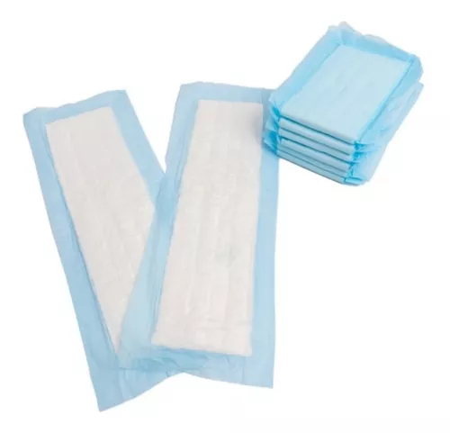
Absorvente Higienico Hospitalar
36006
Almoxarifado
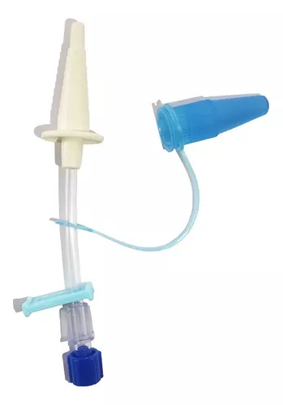
Adaptador de Gastrostomia
Adaptador Jejunostomia
73636
Farmácia
Adesivo de Fixação de Sonda
Adesivo de Fixação de Tubo e Extensão
Fixador p/ Sonda
Adulto = 72984
Infantil = 72983
Farmácia
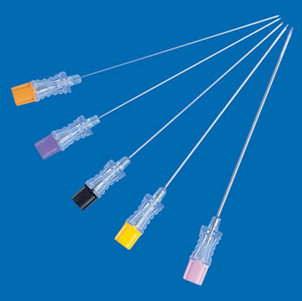
Agulha de Anestesia Raqui
Tam 22/1-2,5 = 57656
Tam 22/3,5 = 3863
Tam 25 = 38951
Tam 25 Pediátrico = 58765
Tam 26 = 36020
Tam 27 = 58
Tam 27 Longa = 65270
Farmácia
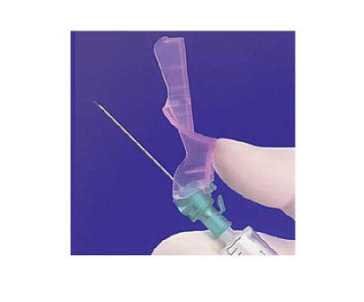
Agulha Descartável
Tam 13x4,5 Insulina = 59529
Tam 26x6 Azul = 77261
Tam 25x7 Preta = 59530
Tam 25x8 Verde = 59531
Tam 25x12 Vermelha (ASPIRAÇÃO) = 59532
Farmácia
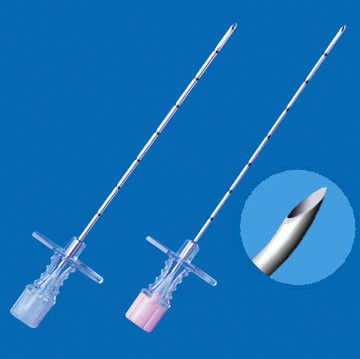
Agulha Epidural
Agulha Peridural
Tam 18G = 65219
Farmácia
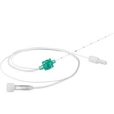
Agulha para Anestesia por Plexo
Tam 22/21G - 100mm = 36016
Tam 22/21G - 50mm = 36017
Tam 20G - 150mm = 36018
Farmácia
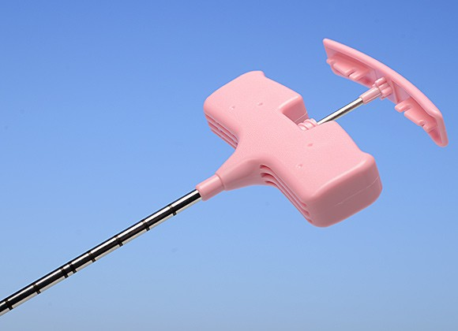
Agulha de Biopsia Óssea
Tam 9Gx15 = 72583
Tam 8Gx12 = 73257
Farmácia
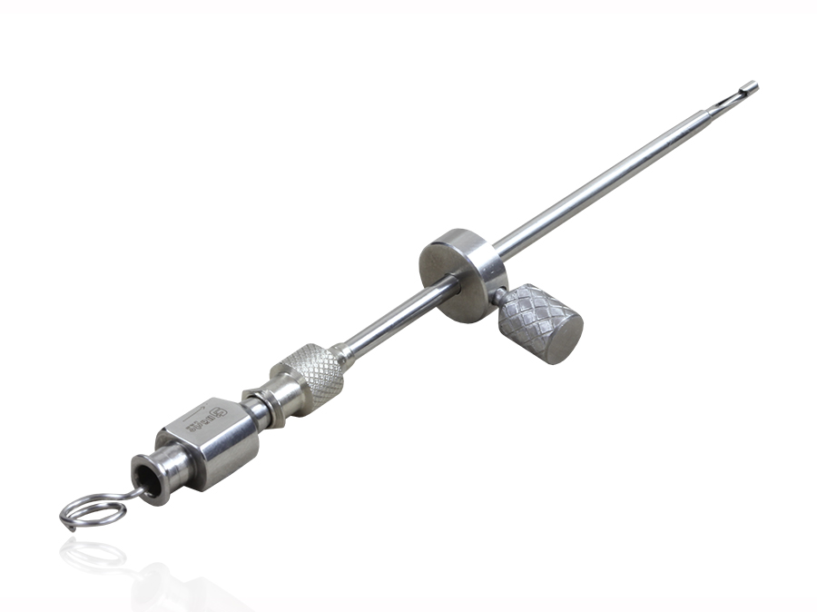
Agulha de Biopsia Pleural
Tam 11G = 59078
Farmácia
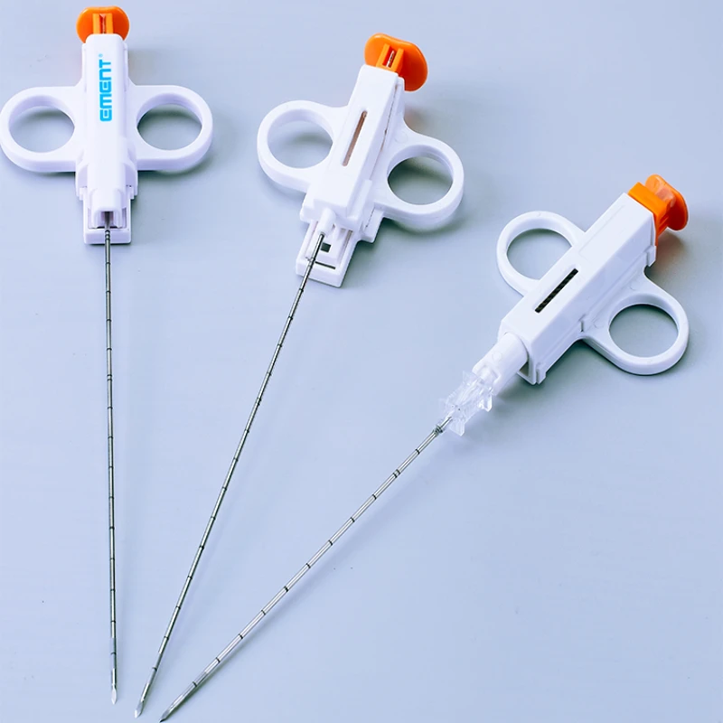
Agulha de Biopsia Renal
Tam 16Gx20 = 71264
Tam 18Gx20 = 71265
Farmácia
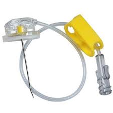
Agulha p/ Cateter Totalmente Implantável
Tam 20Gx15 = 36022
Tam 20Gx25 = 58080
Tam 22Gx20 = 55486
Tam 22Gx25 = 70929
Farmácia
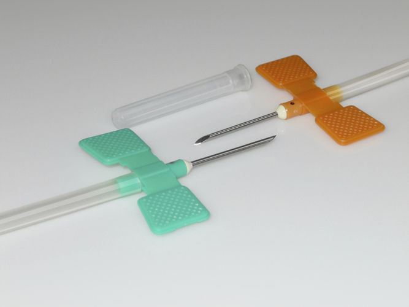
Agulha p/ Fístula Arteriovenosa
Tam 16G = 60009
Tam 17G = 60010
Farmácia
Algodão Hidrófilo
231
Almoxarifado
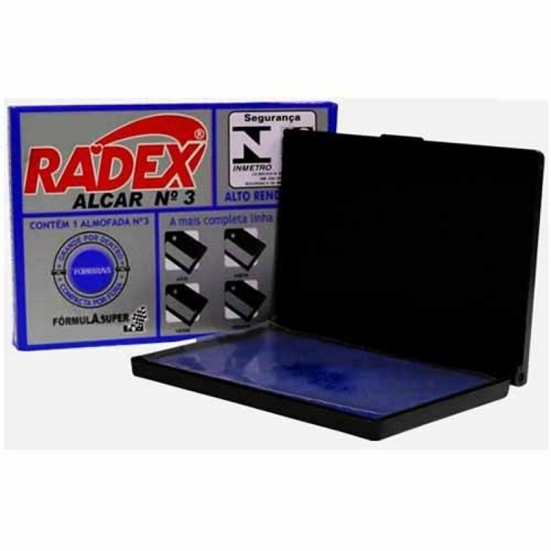
Almofada p/ Carimbo
Tam 3 = 36028
Tam 4 = 36029
Almoxarifado

Aparelho Descartável de Barbear ou Tricotomia
956
Almoxarifado

Apontador de lápis Manual
2388
Almoxarifado
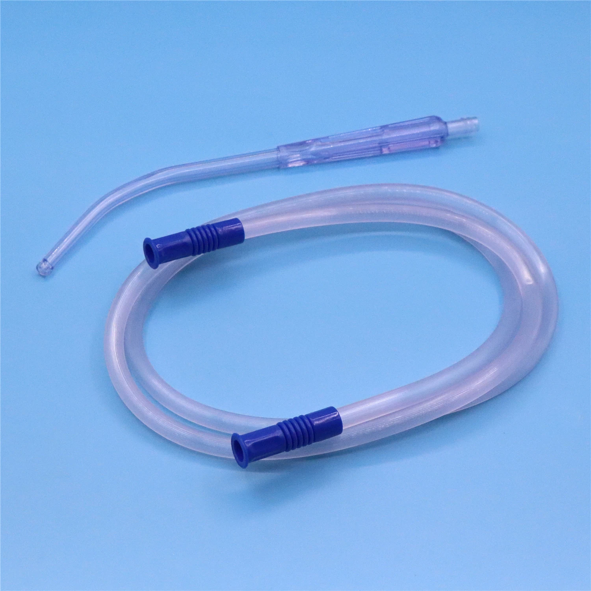
Aspirador com Prolongamento Descartável
Aspirador Cirúrgico Tipo Yankauer
68771
Almoxarifado
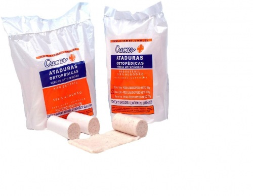
Atadura de Algodão
Atadura Ortopédica
Algodão Ortopédico
Forração p/ Gesso
Tam 8cm = 53737
Tam 10cm = 244
Tam 12cm = 36040
Tam 15cm = 245
Tam 20cm = 246
Almoxarifado
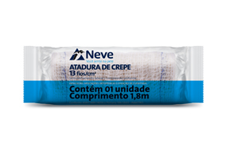
Atadura de Crepe
Atadura Crepom
Tam 6cm = 234
Tam 8cm = 235
Tam 10cm = 36038
Tam 12cm = 22171
Tam 15cm = 238
Tam = 20cm = 239
Almoxarifado
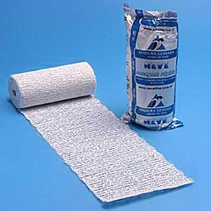
Atadura Gessada
Atadura p/ Gesso
Tam 6cm = 240
Tam 8cm = 241
Tam 10cm = 36039
Tam 12cm = 242
Tam 15cm = 236
Tam 20cm = 243
Almoxarifado
Avental Branco Descartável
Avental Não Estéril Descartável
Avental p/ Acompanhante
20267
Almoxarifado
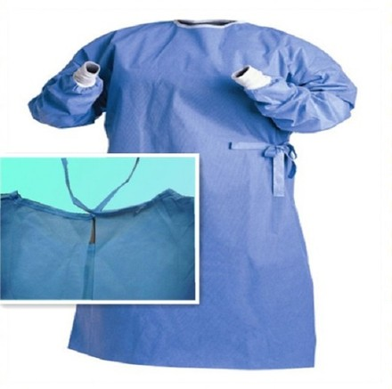
Avental Cirúrgico Descartável
Avental Estéril
Tam G = 72496
Tam GG = 54098
Almoxarifado
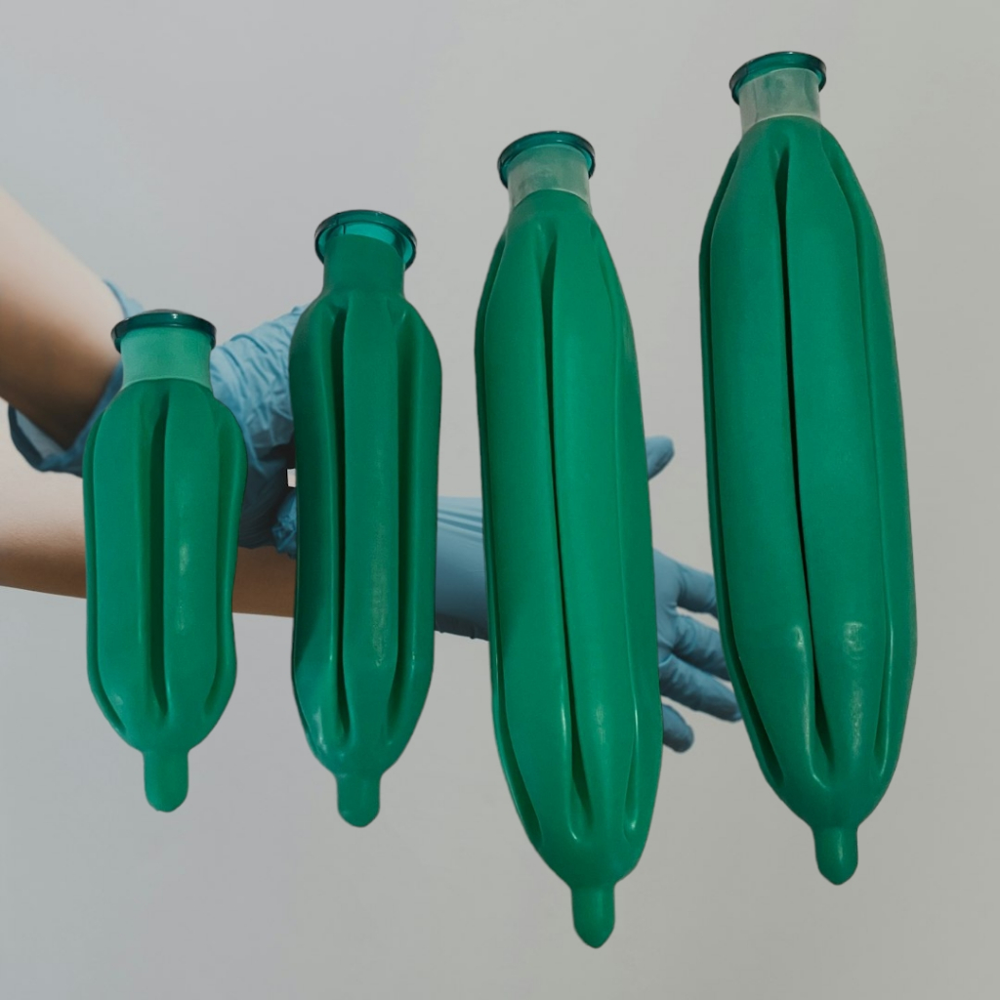
Balão de Oxigênio
Tam 250 ml = 73224
Tam 0,5 litro = 225
Tam 1 litro = 224
Tam 2 litros = 226
Tam 3 litros = 227
Tam 5 litros =7849
Almoxarifado
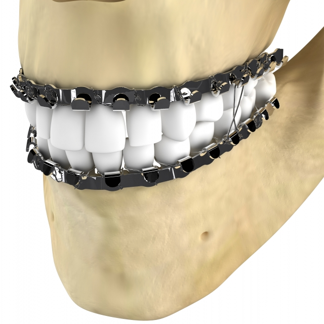
Barra de Erich
51337
Almoxarifado
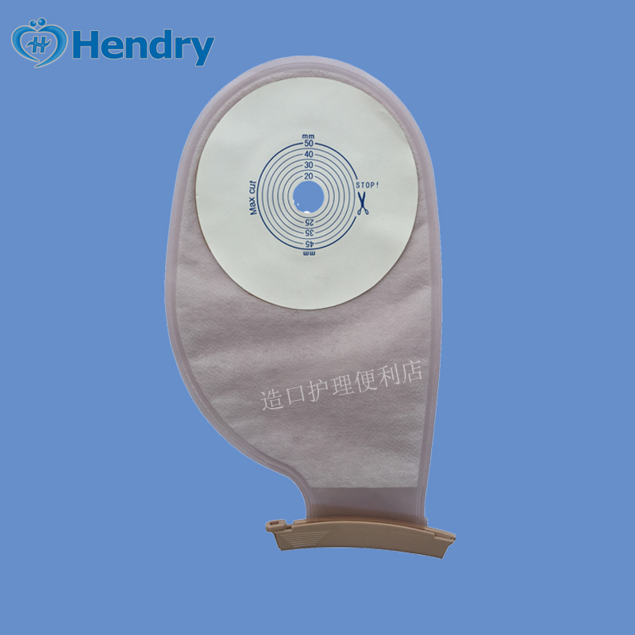
Bolsa de Colostomia 1 peça
Adulto = 49672
Infantil = 36050
Farmácia
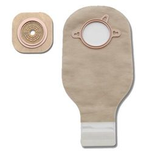
Bolsa de Colostomia 2 peças
Adulto = 58454
Infantil/Pediátrico = 682
Neonatal = 38953
Farmácia

Bolsa de Ostomia Pós-Operatório
65398
Farmácia
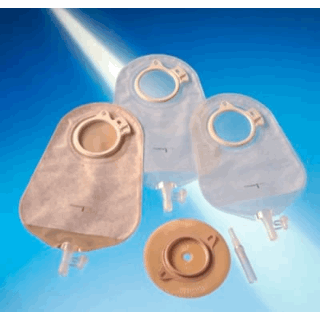
Bolsa de Urostomia
215
Farmácia
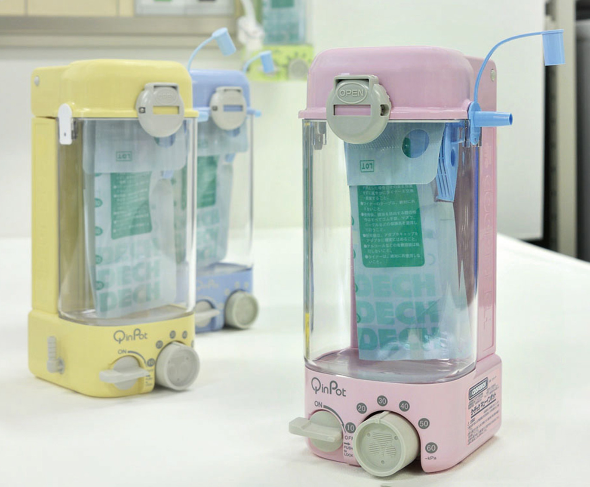
Bolsa Coletora de Secreção
Sistema QIN POT
Sistema Fechado = 72350
Interligado = 72940
Final = 72941
Almoxarifado

Borracha Branca
4383
Almoxarifado
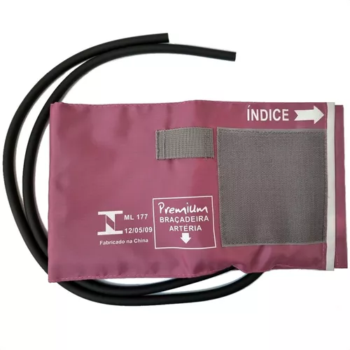
Braçadeira p/ Esfigmomanômetro
Braçadeira p/ Aparelho de Pressão
Adulto = 71447
Adulto Obeso = 12916
Infantil = 53492
Neonatal = 51670
Almoxarifado
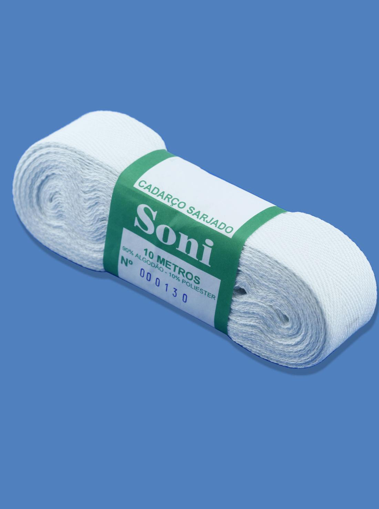
Cadarço de Algodão
959
Almoxarifado

Caixa de Arquivo Morto
Em Papelão = 2404
Em Poliondas = 60053
Almoxarifado

Caixa com Tampa Basculante 65 litros
Caixa Azul = 75573
Caixa Cinza = 75416
Caixa Verde = 69602
Almoxarifado

Caixa Organizadora de Plastico
Organizador Plástico
Caixa Transparente
Tam 1,5 a 2 litros = 68026
Tam 8,5 a 9 litros = 68025
Tam 11,5 a 12,5 litros = 68024
Tam 10 litros = 11543
Tam 20 litros = 36534
Tam 50 litros = 36530
Tam 26x17x8cm = 58058
Tam 400x270x360 = 68400
Almoxarifado
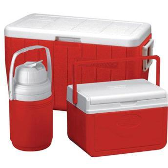
Caixa Térmica
Tam 5 Litros = 58131
Tam 12 Litros = 63276
Tam 15 Litros = 63275
Tam 20 Litros = 58510
Tam 45 Litros = 58511
Almoxarifado

Calculadora
36075
Almoxarifado
Fornecimento a base de troca
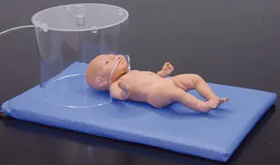
Campanula de Oxigênio
Capacete p/ Oxigênio
Tam P 1 kg = 36077
Tam 1 kg a 3,5 kg = 53150
Almoxarifado
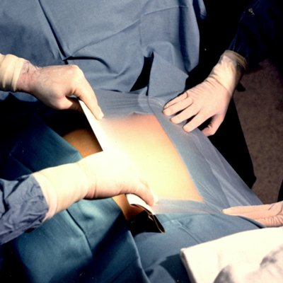
Campo Cirúrgico Plástico Adesivo
Campo Cirúrgico Estéril Transparente
Campo Adesivo Estéril
Tam 15x20cm = 55756
Tam 25x30cm = 55758
Tam 40x45cm = 55757
Tam 60x80cm = 55759
Tam 80x100cm = 74183
Tam 130x130cm = 73441
Tam 140x190cm = 73442
Farmácia
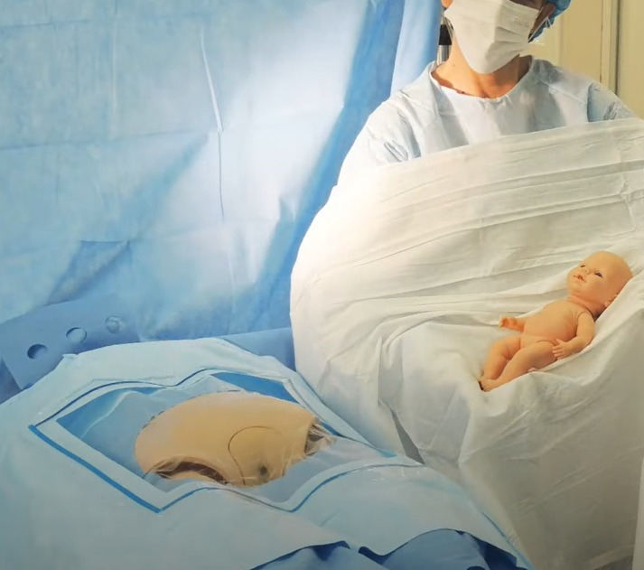
Campo Cirúrgico Estéril para RN
74561
Almoxarifado
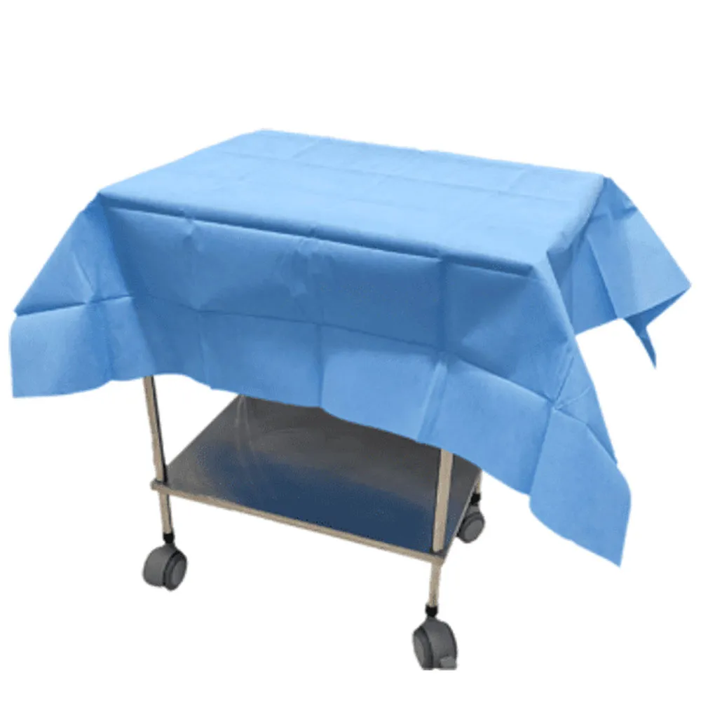
Campo Estéril p/ Mesa Cirúrgico
51832
Almoxarifado
Caneta Cirúrgica
Caneta p/ Marcação Cirúrgica
Pincel p/ Marcação Cirúrgica
72130
Almoxarifado
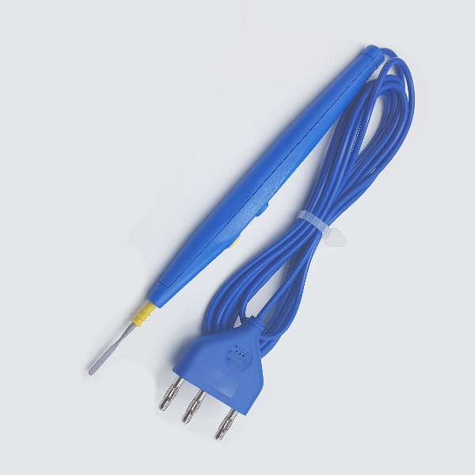
Caneta p/ Bisturi Elétrico
Comando Manual = 38971
Comando Pedal = 51336
Almoxarifado

Caneta Esferográfica
Azul = 2408
Preta = 2409
Vermelha = 2410
Almoxarifado
Fornece em Base de Troca

Caneta Marca Texto
Pincel Marca Texto
Marca Texto
Amarelo = 2405
Azul = 35352
Laranja = 35351
Rosa = 2406
Verde = 2407
Almoxarifado
Fornece em Base de Troca

Caneta p/ Retroprojetor
Marcador Permanente
Pincel Permanente
Azul = 2419
Preta = 2416
Vermelha = 2418
Almoxarifado
Fornece em Base de Troca
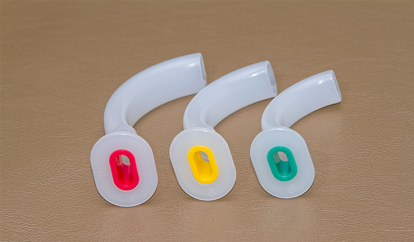
Canula de Guedel
Tam 0 = 9172
Tam 1 = 1054
Tam 2 = 1055
Tam 3 = 1056
Tam 4 = 1057
Tam 5 = 1058
Almoxarifado
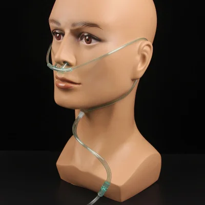
Canula Nasal
Cateter Nasal Tipo Óculos
Cateter p/ Oxigênio
Adulto = 1062
Pediátrico = 72376
Neonatal = 72377
Farmácia
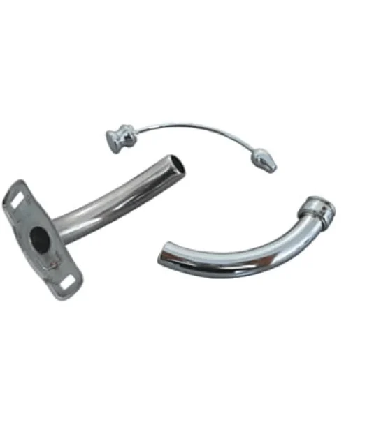
Canula p/ Traqueostomia de Metal "CURTA"
Tam 01 = 67364
Tam 02 = 67365
Tam 03 = 67366
Tam 04 = 67367
Tam 05 = 67368
Tam 06 = 67369
Almoxarifado
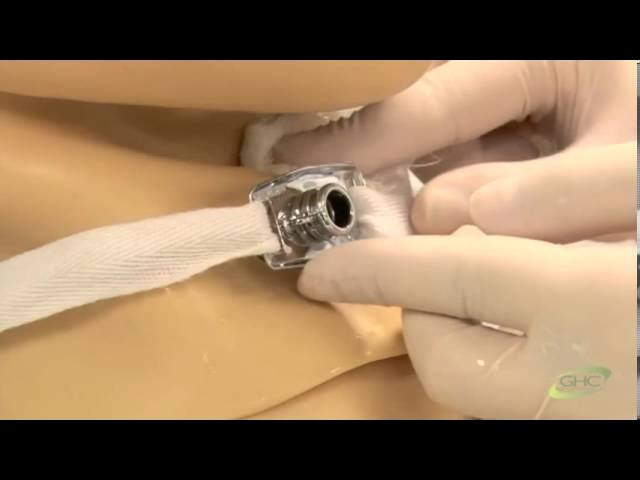
Canula p/ Traqueostomia de Metal "LONGA"
Tam 0 = 67362
Tam 01 = 36106
Tam 02 = 36108
Tam 03 = 36109
Tam 04 = 36110
Tam 05 = 36112
Tam 06 = 36113
Almoxarifado
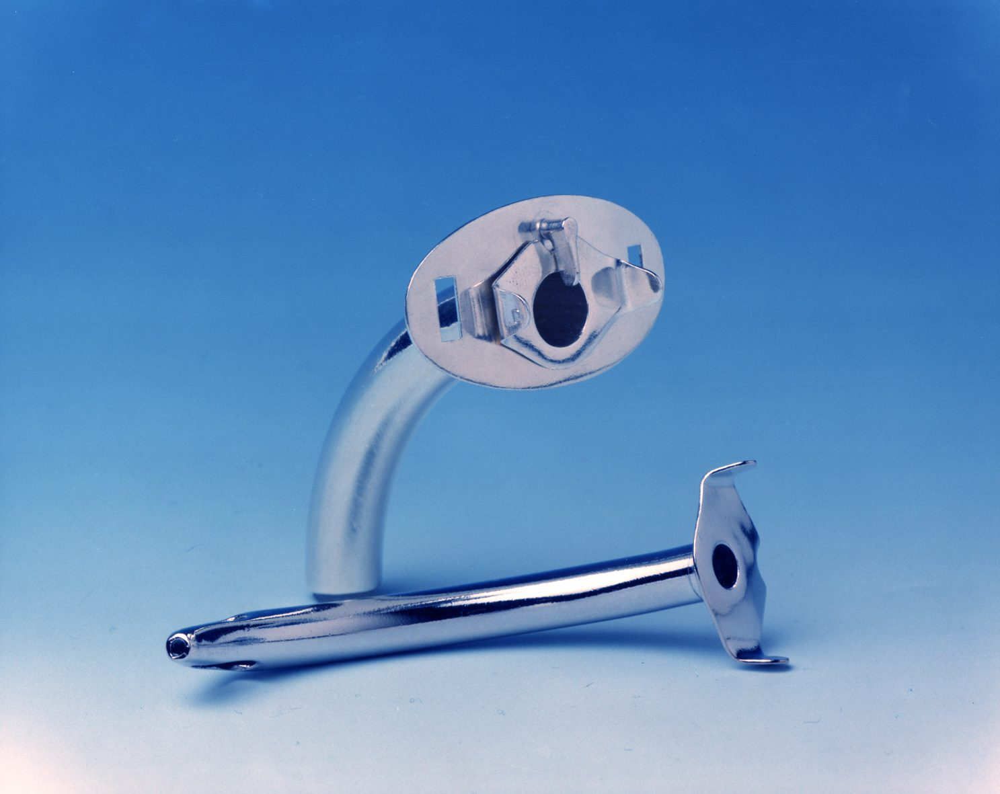
Canula p/ Traqueostomia de Metal "STANDART"
(Padrão/Médio)
Tam 00 = 71835
Tam 0 = 68844
Tam 01 = 68845
Tam 02 = 68846
Tam 03 = 68847
Tam 04 = 68848
Tam 05 = 68849
Tam 06 = 68850
Almoxarifado
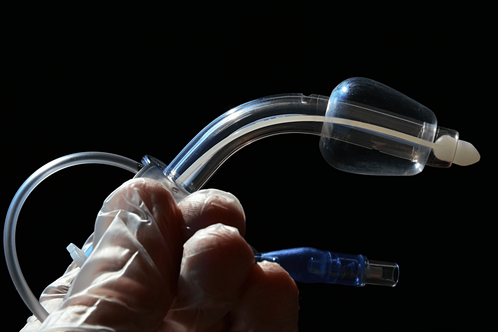
Canula p/ Traqueostomia "COM BALÃO"
Tam 3,5 = 68753
Tam 4,0 = 51582
Tam 4,5 = 51250
Tam 5,0 = 51249
Tam 5,5 = 36085
Tam 6,0 = 36090
Tam 6,5 = 36087
Tam 7,0 = 36088
Tam 7,5 = 36089
Tam 8,0 = 36086
Tam 8,5 =36095
Tam 9,0 = 36097
Farmácia
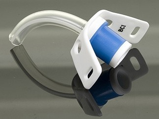
Canula p/ Traqueostomia "SEM BALÃO"
Tam 2,5 = 61297
Tam 3,0 = 61298
Tam 3,5 = 61299
Tam 4,0 = 36099
Tam 4,5 = 36100
Tam 5,0 = 73714
Farmácia
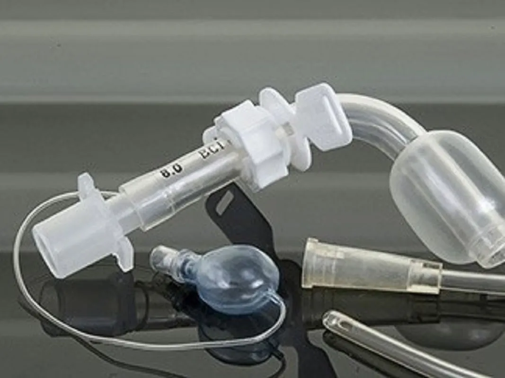
Canula p/ Traqueostomia "AJUSTÁVEL" Com Balão
Tam 06 = 36105
Tam 07 = 65555
Tam 08 = 68854
Farmácia
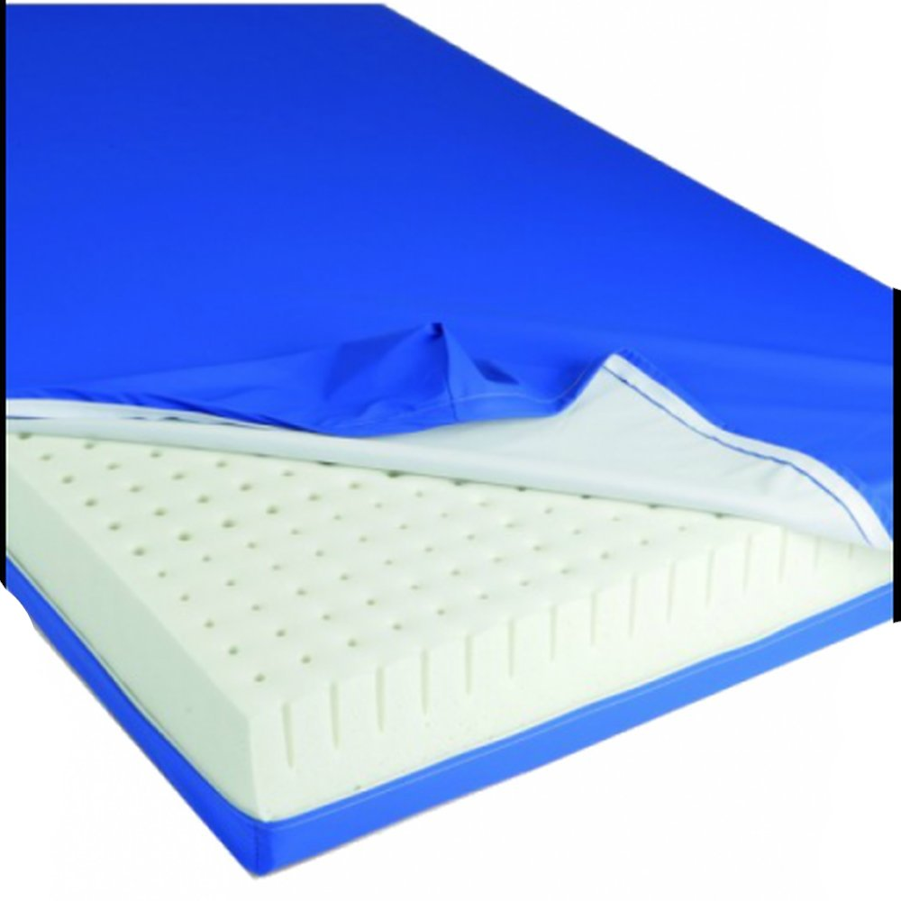
Capa p/ Colchão Hospitalar
Adulto = 63364
Almoxarifado
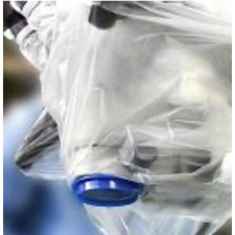
Capa p/ Microscópio
Com Visor = 18500
Zeiss Pentero = 58503
Farmácia
Capa p/ Vídeo Cirurgia
36114
Farmácia
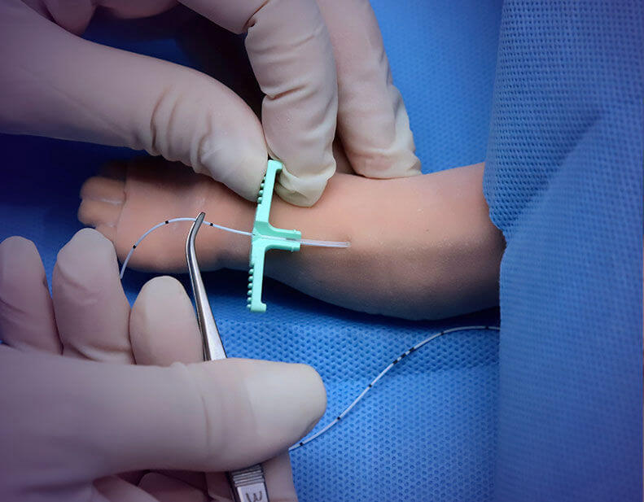
Cateter Central de Inserção Periférica "PICC"
Mono Lumem (1 Via)
Tam 2FR = 67253
Tam 2FR Silicone = 36128
Tam 3FR = 36125
Tam 4FR = 36124
Tam 5FR = 9684
Farmácia
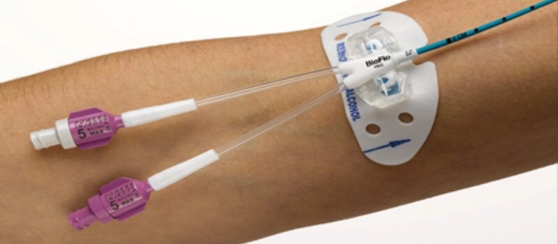
Cateter Central de Inserção Periférica "PICC"
Duplo Lumem (2 Vias)
Tam 2FR = 54482
Tam 3FR = 71452
Tam 4.5FR = 73629
Farmácia
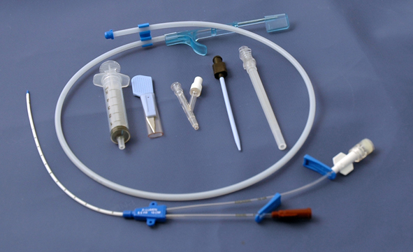
Cateter Central Duplo Lumem
Tam 4FR8cm = 3233
Tam 4FR 15cm = 36130
Tam 5FR 15cm = 36132
Tam 7FR 20cm = 60003
Farmácia
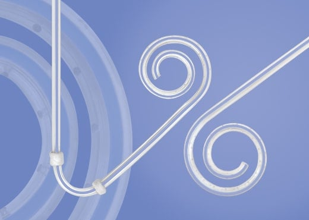
Cateter p/ Diálise Peritoneal
Cateter p/ Diálise Tenckhoff
Adulto 15FR = 60270
Pediátrico 12FR = 22821
Neonatal 9FR = 22441
Farmácia
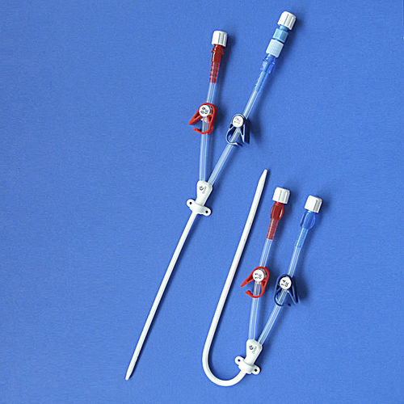
Cateter Duplo Lumem p/ Hemodiálise
Kit p/ Hemodiálise de Longa Permanencia
Tam 20cm 12FR = 36136
Tam 19cm 14 a 15,5FR = 76833
Tam 24cm 14 a 15,5FR = 76834
Tam 33cm 14 a 15,5FR = 76835
Farmácia
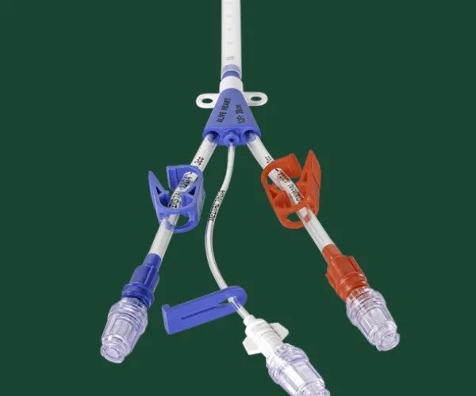
Cateter Triplo Lumem p/ Hemodiálise
Kit Triplo Lumem p/ Hemodiálise
Tam 20cm 12FR = 66643
Farmácia
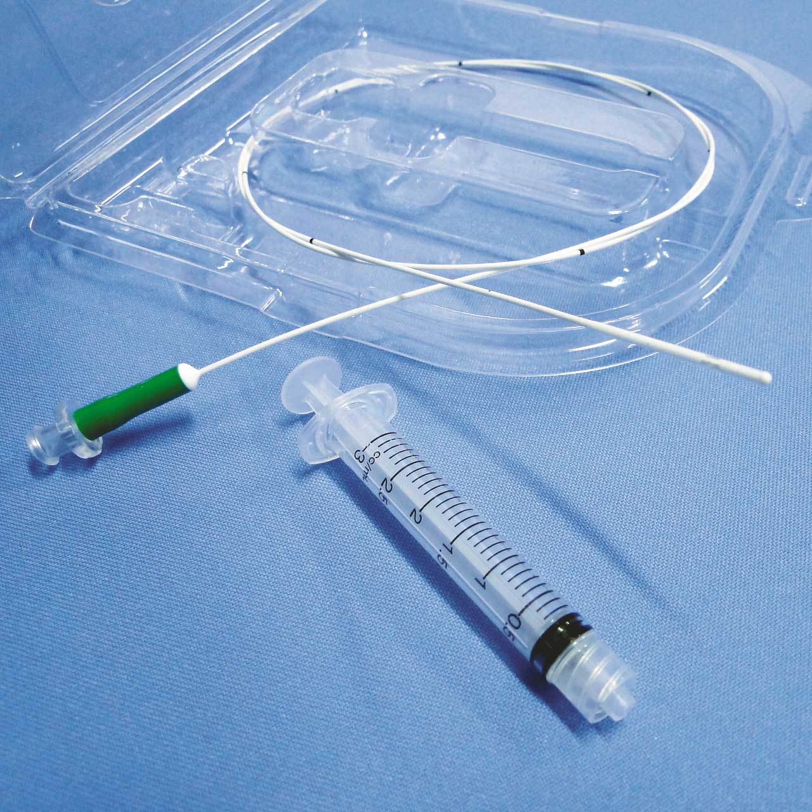
Cateter p/ Embolectomia
Cateter Fogarty
Tam 2FR = 6804
Tam 3FR = 36139
Tam 4FR = 36140
Tam 5FR = 36141
Tam 6FR = 36144
Farmácia
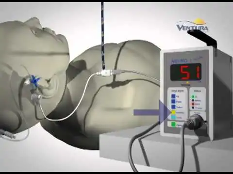
Cateter p/ Monitorização da Pressão Intracraniana
Cateter PIC
Cateter Parenquimal = 45861
Cateter Ventricular = 32932
Farmácia
Cateter Umbilical Mono Lumem
Tam 2,5FR = 65368
Tam 3,5FR = 65369
Tam 4FR = 65370
Tam 5FR = 65371
Tam 6FR = 65373
Farmácia
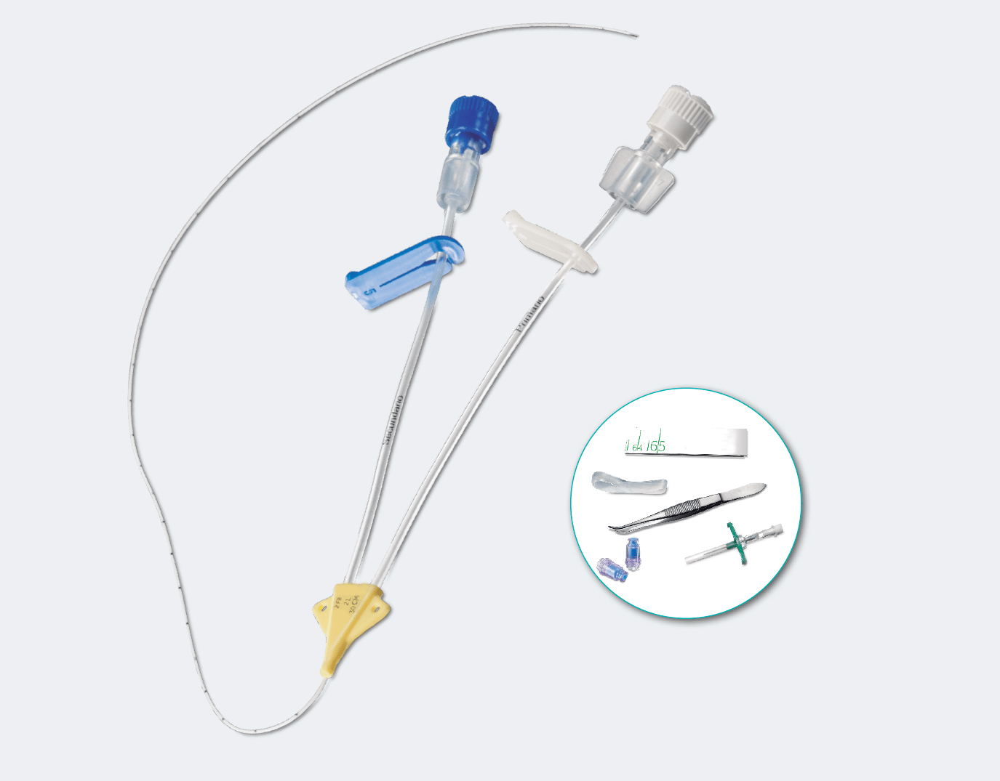
Cateter Umbilical Duplo Lumem
Tam 3,5FR = 53608
Tam 4FR =70790
Tam 5FR =53609
Farmácia
Cateter Venoso Periférico
Cateter Abocath
Cateter Punção Venosa
Tam 14G = 53627
Tam 16G = 57620
Tam 18G = 67344
Tam 20G = 53632
Tam 22G = 53633
Tam 24G = 53646
Tam 24G CURTO = 53647
Farmácia
Clamp Umbilical
547
Almoxarifado
Clip de Titaneo
Clip Hemostático
Pequeno = 23246
Médio = 1201
Médio/Grande = 13600
Grande = 1200
Farmácia
Clip Modelo Raney
Clip Raney
59751
Farmácia

Clips Galvanizado
Clips p/ Papel
Caixa de Clips
Tam 2/0 = 2430
Tam 3/0 = 2431
Tam = 4/0 = 2432
Tam 6/0 = 2433
Almoxarifado

Cola Branca
Cola líquida
2435
Almoxarifado

Cola em Bastão
Cola Bastão
2434
Almoxarifado
Colar Cervical Modelo Philadelphia
Tam P = 53440
Tam M = 53439
Tam G = 53436
Central de Material
Colchão de Ar Caixa de Ovo
Colchão Inflável
Colchão Conforto
36173
Almoxarifado
Colchão Dobrável ao Meio
Sofanete impermeável
Colchonete p/ Acompanhante
51604
Almoxarifado
Colchão Hospitalar
Colchão p/ Cama Adulto = 63358
Colchão p/ Cama Pediátrico = 51601
Colchão p/ Berço Neonatal = 69214
Colchão p/ Incubadora = 69215
Almoxarifado
Colchonete Hospitalar p/ Maca
Colchão p/ Maca Hospitalar
5152
Almoxarifado
Coletor de Broncoscopia Bronquinho
Coletor de Secreções Traqueal
Bronquinho 70ml = 8526
Bronquinho 120ml = 72987
Farmácia
Coletor de Perfurocortante "em Papelão"
Coletor de Papelão p/ Material Perfurocortante
Tam 13 Litros = 38522
Tam 07 Litros = 0694
Tam 1,5 Litros = 71114
Almoxarifado
Coletor de Perfurocortante "Plastico"
Coletor de Plastico p/ Material Perfurocortante
Tam 13 Litros = 57597
Tam 07 Litros = 75698
Tam 03 Litros = 75697
Almoxarifado
Coletor de Urina e Secreções
Frasco Coletor Sistema Aberto
Coletor Drenador Tipo Garrafa
67283
Farmácia
Coletor de Urina Infantil
Coletor de Urina Unissex
687
Farmácia
Coletor de Urina Sistema Fechado Neonatal
Coletor de Urina Fechado Tipo Bureta
58766
Farmácia
Coletor de Urina Sistema Fechado
Bolsa Coletora de Urina
690
Farmácia
Compressa Cirúrgica Estéril
Campo Operatório
Compressa p/ Procedimento
Tam 25x28 = 65281
Tam 10x09 = 60057
Almoxarifado
Compressa de Gaze Algodonado
Chumaço Estéril de Algodão
Curativo Cirúrgico de Algodão
57981
Almoxarifado
Compressa de Gaze "Estéril"
Gaze Estéril 7,5cm x 7,5cm
Pacote com 10 = 16430
Pacote com 05 = 51608
Almoxarifado
Compressa de Gaze "Não Estéril"
Gaze Não Estéril
Pacote com 500 un. = 51139
Almoxarifado
Compressas Neurocirúrgica Estéril
Tam 13 x 13 = 65523
Tam 25 x 25 = 65524
Tam 75 x 75 = 65525
Farmácia
Conjunto p/ Nebulização
Kit p/ Inalação
Adulto - Ar Comprimido = 33941
Adulto - Oxigênio = 11322
Pediátrico - Ar Comprimido = 71035
Pediátrico - Oxigênio = 71034
Para uso em Respirador/Ventilador = 71031
Almoxarifado

Copo Descartável
Copo Plastico
180 ml = 3201
150 ml = 70232
50 ml = 3200
Almoxarifado
Pacote com 100 unidades
Curativo Adesivo Transparente
Curativo p/ Cateter Venoso
Tam 5 x 5,5cm = 36203
Tam 5 x 6cm = 969
Tam 7 x 7cm = 74845
Em Rolo 10cm x 10m = 36204
Farmácia
Dialisador Capilar - Alto Fluxo
Filtro Dialisador
1,5 a 1,7m² = 71316
1,8 a 1,9m² = 36115
2,0 a 2,2m² = 71317
Farmácia
Dispositivo de Incontinência Urinária
Uripem
Tam 25mm = 69299
Tam 30mm = 57940
Tam 35mm = 57941
Farmácia
Dispositivo Oclusor p/ Cateter e Seringa
Conector Oclusor p/ uso em Sistema Venoso
Tampa Oclusor p/ Sistema Venoso
51824
Farmácia
Dispositivo p/ Irrigação p/ Uso em Frasco e Bolsa
Dispositivo de Irrigação Sistema Fechado
Dispositivo p/ Transferência de Soluções
57989
Farmácia
Dosador Oral
Seringa p/ Medicação Oral / Sonda
Tam 03 ml = 36179
Tam 05 ml = 36180
Tam 10 ml = 11350
Tam 20 ml = 36183
Farmácia
Dreno de Kehr
Tubo em T
Nº 08 = 36185
Nº 10 = 36184
Nº 12 = 1064
Nº14 = 1065
Nº 16 = 1066
Nº 18 = 1067
Nº 20 = 1068
Farmácia

Dreno de Penrose
Nº 01 = 1069
Nº 02 = 1070
Nº 03 = 1071
Nº 04 = 1072
Farmácia
Dreno de Tórax
Kit de Drenagem Torácica
(Dreno e Frasco)
Nº 10 FR = 13390 - - - Nº 12 FR = 19472
Nº 14 FR = 45521 - - - Nº 16 FR = 45531
Nº 18 FR = 5623 - - - Nº 20 FR = 1073
Nº22 FR = 1074 - - - Nº 24 FR = 1075
Nº 26 FR = 1076 - - - Nº 28 FR = 1077
Nº 30 FR = 1078 - - - Nº 32 FR = 1079
Nº 34 FR = 1080 - - - Nº 36 FR = 1081
Nº 38 FR = 1082 - - - Nº 40 FR = 1083
Farmácia
Dreno Suctor
Dreno p/ Sucção
Dreno a Vácuo
3,2mm = 4259
4,8mm = 4392
6,4mm = 6420
Farmácia

Elástico p/ Dinheiro
Borrachinha Elástica
2441
Almoxarifado
Eletrodo Descartável
Eletrodo Adulto = 976
Eletrodo Pediátrico = 55760
Eletrodo Neonatal = 70505
Eletrodo p/ Ressonância = 72995
Farmácia

Envelope
Tam 16,2 x 22 = 36191
Tam 18 x 24 = 51169
Tam 26 x 36 = 36188
Tam 37 x 47 = 36192
Envelope Vai e Vem = 50302
Almoxarifado
Equipo Bureta
Equipo Graduado
65361
Farmácia
Equipo Diálise Peritoneal
Adulto = 935
Pediátrico = 71318
Farmácia
Equipo Enteral
Equipo p/ Dieta
Equipo p/ Alimentação por Sonda
Uso em Bomba de Infusão = 72974
Uso Gravitacional = 74180
Farmácia
Equipo Macro
Equipo Infusão Venosa
Equipo p/ Soroterapia
Macro Gotas / Gravitacional = 65362
Macro Uso em Bomba = 11551
Macro Bomba Neonatal = 57809
Macro Bomba Fotossensível = 942
Farmácia
Equipo Irrigação 2 Vias
Equipo p/ Irrigação Vesical
939
Farmácia
Equipo Irrigador p/ Artroscopia 2 Vias
76267
Farmácia
Equipo p/ Aspirador Ultrassonico
Equipo Sonoca
58505
Farmácia
Equipo p/ Transfusão de Sangue
Equipo p/ Hemoderivados
65364
Farmácia
Equipo Pressão Venosa Central
Equipo PVC
940
Farmácia
Equipo 2 Vias
Polifix 2 Vias
Equipo/Conexão 2 Vias
Adulto = 943
Neonatal = 31482
Farmácia
Escova Dental
Escova p/ Higiene Oral
Adulto = 36298
Infantil = 36299
Almoxarifado
Esfigmomanômetro
Aparelho de Pressão
Adulto Manual = 59562
Adulto Resistente à Impactos = 36296
Pediátrico Manual = 59561
Pediátrico Resistente à Impactos = 36297
Neonatal Resistente à Impactos = 53666
Almoxarifado
Espaçador p/ Medicamentos Aerosóis
Adulto = 72332
Infantil = 72333
Adulto e Infantil = 74503
Farmácia
Esparadrapo Impermeável
Tam 10 x 4,5cm = 971
Farmácia
Especulo Vaginal Descartável
Tam P = 47672
Tam M = 47671
Tam G = 9950
Almoxarifado
Esponja Dupla Face
2608
Almoxarifado

Estetoscópio
Adulto = 31121
Infantil = 57908
Almoxarifado
Etiqueta Adesiva
Etiqueta p/ código de Barras
Etiqueta p/ Impressora
03 Fileiras = 73929
01 Fileira 90 x 50 = 75103
01 Fileira 90 x 50 Sem Ribon = 73980
01 Fileira 57 x 28 = 73931
Visitante = 75104
Almoxarifado
Exercitador Pulmonar
Incentivador Respiratório
Aparelho de Exercício Respiratório
Respiron = 51180
Shaker Classic = 73476
Almoxarifado
Extensor/Perfusor p/ Equipo
Prolongamento p/ Equipo
Tam 60cm = 949
Tam 120cm = 64921
Tam 120cm p/ Bomba = 948
Tam 120cm Fotossensível = 947
Tam 120cm Enteral = 70688
Farmácia
Faixa de Smarch
Tam 06 = 255
Tam 08 = 36229
Tam 10 = 256
Tam 12 = 36230
Tam 15 = 257
Tam 20 = 258
Almoxarifado

Filme de PVC
Tam 28cm x 30m = 36546
Tam 50cm x 800m (Stretch) = 51236
Tam 60cm x 1000m = 63885
Almoxarifado
Filtro Umidificador Eletroestático
Filtro p/ Respirador
Adulto = 64915
Pediátrico = 57909
Neonatal = 73216
Farmácia
Fio de Cerclagem
Tam 1.0 = 25054
Tam 1.2 = 25057
Tam 1.5 = 72248
Farmácia
Fio de Kirschner
Fio Fixador Ortopédico
Tam 1.0mm = 4701
Tam 1.2mm = 68348
Tam 1.5mm = 4260
Tam 2.0mm = 4399
Farmácia
Fio de Steinmann
Fio Fixador Ortopédico
Tam 2.5mm = 4510
Tam 3.0mm = 24781
Tam 3.5mm = 24853
Tam 4.5mm = 24854
Farmácia

Fio Guia Descartável
Guia de Entubação
Adulto = 67609
Pediátrico = 68853
Neonatal = 68852
Almoxarifado
Fio Guia Tipo Bougie
Fio Guia p/ Entubação
Adulto = 65480
Pediátrico = 67666
Farmácia
Fita Adesiva de Silicone
Fixador de Dispositivos Médicos em Silicone
75366
Farmácia

Fita Adesiva Larga
Fita Larga 45 x 50
Marron = 36304
Transparente = 2450
Almoxarifado

Fita Crepe Adesiva
Fita Adesiva Hospitalar
Fita Branca 19x50
64472
Almoxarifado
Fita de Teflon
Fita p/ Seladora
Tam 25mm = 8150
Tam 40mm = 54462
Almoxarifado
Fita Microporosa
Micropore Adesivo
Tam 10 cm x 10 M = 53555
Tam 25 cm x 10 M = 36302
Tam 50 cm x 10 M = 36013
Farmácia
Fixador de Traqueostomia
Adulto = 51673
Pediátrico = 75685
Farmácia
Fixador de Tubo Endotraqueal
Adulto = 51672
Infantil = 72982
Farmácia
Fralda Descartável Prematuro
Abaixo de 800g = 68220
Entre 800g à 1.250g = 68221
Entre 1.250g à 2.250g = 68222
Almoxarifado
Fralda Descartável Pediátrica
Tam RN = 36313
Tam P = 36310
Tam M = 36311
Tam G = 36312
Almoxarifado
Fralda Geriátrica
Fralda Descartável Adulto
Tam P = 68224
Tam M = 68225
Tam G = 68226
Tam GG = 68227
Tam XXG = 18060
Almoxarifado
Frasco de Vidro Com Tampa
250 à 300ml = 58071
500ml = 54546
Almoxarifado
Frasco p/ Dreno de Tórax
Frasco p/ Drenagem Mediastinal
2.000 ml = 68774
1.000 ml = 68775
250 ml = 68776
Farmácia
Frasco p/ Nutrição Enteral
Frasco p/ Dieta
300 ml = 51458
Almoxarifado
Garrote Tipo Torniquete
Garrote p/ Punção Venosa
73663
Almoxarifado
Gel p/ ECG
Gel p/ Ultrasson
Gel p/ ECG = 36329
Gel p/ Ultrasson = 74791
Almoxarifado
Glicosímetro
Aparelho p/ medir Glicemia
77857
Almoxarifado

Grampo Plastico Estendido
Grampo Trilho
Grampo Estendido = 71108
Grampo Trilho = 54469
Almoxarifado
Hastes Flexíveis
Cotonete Descartável
964
Almoxarifado

Introdutor de PICC
Tam 16G = 38669
Tam 18G = 34767
Tam 20G = 28863
Tam 22G = 36171
Tam 26G = 36172
Farmácia
Isolador de Pressão
Barreira Protetora p/ Hemodiálise
53724
Farmácia
Kit Anestesia Peridural
Tam 18G = 51196
Farmácia
Kit Cirúrgico
LAP Cirúrgico
Parto Cesárea = 36358
Parto Normal = 65394
Ortopédico / Ortopedia = 36356
Para Artroscopia de Ombro = 73486
Para Cirurgia de Quadril = 73444
Pediátrico Universal = 73443
Universal / Geral = 65395
Almoxarifado
Kit de Curativo Descartável
Curativo Estéril
73175
Almoxarifado
Kit p/ Tratamento de Incontinência Urinária
Tela de Sling
Retropúbica = 74003
Transobturadora = 71019
Farmácia
Kit p/ Curativo Pressão Negativa
Curativo à Vácuo
Tam M = 69575
Tam G = 69574
Reservatório 800ml = 69576
Almoxarifado
Kit Tração Ortopédica
Tração Cutânea
Adulto = 73528
Infantil = 73529
Almoxarifado
Lacre de Segurança
Lacre p/ Carrinho de Emergência
50962
Farmácia
Lamina de Bisturi
Lamina p/ Bisturi
Nº 11 = 0553
Nº 12 = 67533
Nº 15 = 0555
Nº 22 = 53337
Nº 23 = 36372
Farmácia
Lamina p/ Laringoscópio Curva
Lamina Curva p/ Laringoscópio
Tam Nº 0 = 014531
Tam Nº 01 = 36363
Tam Nº 02 = 36364
Tam Nº 03 = 51248
Tam Nº 04 = 36366
Tam Nº 05 = 58819
Almoxarifado
Lamina p/ Laringoscópio Reta
Lamina Reta p/ Laringoscópio
Tam Nº 00 = 51339
Tam Nº 0 = 14530
Tam Nº 01 = 09336
Tam Nº 02 = 43004
Tam Nº 03 = 36367
Tam Nº 04 = 36368
Tam Nº 05 = 36370
Almoxarifado
Lamina p/ Tricotomizador Elétrico
37421
Farmácia
Lanceta Estéril
Adulto 21G = 59135
Neonatal 29/30G = 59134
Farmácia
Lanterna Clinica
36375
Almoxarifado
Fornece em Base de Troca

Lapis
Lapis Preto Nº 02 = 02478
Lapis de Cor com 12 un = 32202
Lapis Dermatografico Azul = 36388
Lapis Dermatografico Vermelho = 36389
Almoxarifado
Lençol Hospitalar
Lençol p/ Maca
Tam 50cm x 50m = 03198
Tam 70cm x 50m = 51239
Almoxarifado
Linha Arterial e Venosa p/ Hemodiálise
Arterial = 36378
Venosa = 36379
Farmácia

Livro Ata
Livro Protocolo
Ata 100 fls = 02479
Ata 200 fls = 54473
Protocolo = 02481
Almoxarifado
Luva Cirúrgica
Luva Estéril
Tam 6.0 = 57910
Tam 6.5 = 122
Tam 7.0 = 123
Tam 7.5 = 124
Tam 8.0 =125
Tam 8.5 = 126
Farmácia

Luva Cirúrgica Estéril Sem Pó
Luva Estéril Hipoalergenica
Tam 6.0 = 70226
Tam 6.5 = 63445
Tam 7.0 = 63446
Tam 7.5 = 63447
Tam 8.0 = 63448
Tam 8.5 = 63449
Farmácia
Luva de Procedimento
Luva Com Latex
Luva Com Pó
Tam EP/PP = 58820
Tam P = 129
Tam M = 18900
Tam G = 128
Almoxarifado
Luva Sem Latex p/ Procedimento
Luva Nitrílica
Luva p/ Procedimento Sem Pó
Tam P = 66479
Tam M = 66480
Tam G = 66481
Almoxarifado
Malha Tubular
Malha Ortopédica
Tam 06cm x 15m = 3644
Tam 08cm x 15m = 259
Tam 10cm x 15m = 260
Tam 12cm x 15m = 261
Tam 15cm x 15m = 13401
Tam 20cm x 15m = 51781
Farmácia
Manta Térmica
Adulto Corpo Inteiro = 64910
Adulto Inferior = 64913
Adulto Superior = 64912
Adulto Uso Sob o Corpo = 68998
Pediátrico Corpo Inteiro =64911
Neonatal Corpo Inteiro = 73363
Farmácia

Máscara Com Reservatório
Adulto = 5390
Pediátrica = 71036
Almoxarifado
Máscara de Venturi
Kit Máscara de Venturi
Adulto = 16310
Pediátrica = 49732
Almoxarifado
Máscara Facial de Coxim Inflável
Máscara p/ Ventilação não Invasiva
Máscara p/ Anestesia
Nº 01 = 43001
Nº 02 = 43002
Nº 03 = 36503
Nº 04 = 36504
Nº 05 = 36505
Almoxarifado
Máscara Laríngea
Nº 1.0 = 67667
Nº 1.5 = 67668
Nº 2.0 = 67669
Nº 2.5 = 67670
Nº 3.0 = 67671
Nº 4.0 = 65478
Nº 5.0 = 65479
Farmácia
Máscara N95 ou PFF2
Máscara Bico de Pato
8402
Farmácia
Máscara p/ Traqueostomia
Adulto = 36511
Pediátrica = 69261
Almoxarifado
Máscara Tripla Descartável
Máscara Descartável
Com Elástico = 1026
Com Tiras = 1027
Almoxarifado
Meia Elástica de Compressão
Meia Elástica Vascular
Tam P = 65243
Tam M = 65245
Tam G = 65246
Tam GG = 65247
Tam Plus Size = 72589
Farmácia
Papel Alumínio
Rolo de Papel Alumínio
5300
Almoxarifado

Papel Carbono
2484
Almoxarifado
Papel Cardiotoco
Papel p/ Cardiotocógrafo
Bistos WEN 13cm = 65186
Comen 112mm x 90mm = 74224
Corometrics 152mm x 90mm = 74211
Almoxarifado

Papel Sulfite
A4 = 42281
A3 = 48761
Almoxarifado

Pasta de Cartolina
Com Elástico = 2491
Com Grampo = 51162
Almoxarifado

Pasta Polionda
20mm = 54481
35mm = 36543
55mm = 02498
Almoxarifado

Pilha
Bateria
AA (pequena) = 4135
AAA (palito) = 4138
Média "C" = 4136
Grande "D" = 4137
Bateria p/ Glicosímetro = 77858
Bateria 9 Volts = 2094
Almoxarifado
Fornece a base de troca
Placa Bipartida Descartável
Placa p/ Bisturi Elétrico Bipartida
Adulto Bipartida = 36550
Infantil Bipartida = 36551
Neonatal Bipartida = 69627
Farmácia
Placa p/ Colostomia
Placa Plana p/ Colostomia Adulto = 66672
Placa Plana p/ Colostomia Pediátrica = 691
Placa Plana p/ Colostomia Neonatal = 38952
Placa Convexa p/ Colostomia Adulto = 66676
Farmácia

Prancheta
Em Acrilico = 48101
Almoxarifado
Preservativo Masculino
Sem Lubrificante = 43861
Almoxarifado
Pressurizador de Soro
Bolsa Pressurizadora
500ml = 9871
1000ml = 36570
Almoxarifado
Prolongamento de Inalação
Extensor p/ Inalação
Ar Comprimido = 17072
Almoxarifado
Prolongamento p/ Oxigenioterapia
Extensor Descartável p/ Oxigenioterapia
Tam 1.5m = 68773
Prolongamento Descartável 3m
Extensor p/ Aspiração/Oxigenação
Tam 3m = 68772
Almoxarifado
Protetor de Manopla p/ Foco Cirúrgico
Protetor de Manopla Estéril Descartável
75286
Almoxarifado
Protetor Ocular p/ Fototerapia
Óculos de Proteção p/ Fototerapia
Tam P = 72771
Tam M = 72770
Tam G = 72769
Farmácia

Pulseira de Identificação
Pulseira Hospitalar
Adulto = 73927
Pediátrica = 73928
Almoxarifado

Regua
Antropométrica = 16740
Transparente 30cm = 2506
Transparente 50cm = 36495
Almoxarifado

Ribon
Ribon = 75105
Almoxarifado
Rompedor de Membrana Amniótica
Rompedor da Bolsa Amniótica
51145
Almoxarifado
Sabonete Neutro
Líquido 01 Litro = 62907
Almoxarifado
Saco p/ Cadáver
Embalagem p/ Cadáver
Tam P = 68112
Tam M = 68113
Tam G = 68114
Almoxarifado
Saco Plastico em Rolo
Embalagem Plastico Transparente
Rolo 25 x 35 = 69688
Rolo 30 x 40 = 69689
Almoxarifado
Saco Plastico p/ Hamper
Saco p/ Acondicionamento de Produtos Reprocessáveis
Saco p/ Hamper Amarelo = 71457
Saco p/ Hamper Verde = 71456
Saco Laranja 50 Litros = 75419
Almoxarifado

Saco Plastico Transparente
Embalagem Plastica Transparente
Tam 04 x 23cm = 36402
Tam 10 x 15cm = 36403
Tam 20 x 34cm = 36405
Tam 24 x 36cm = 36407
Tam 30 x 40cm = 57631
Tam 40 x 50cm = 36406
Tam 50 x 70cm = 36408
Tam 80 x 90cm = 76271
Almoxarifado
Sapatilha Propé Descartável
Propé (Protetor p/ Pé)
696
Almoxarifado
Sensor p/ Monitorização da Anestesia
Sensor BIS
Monitorização da Atividade Cerebral
Adulto = 71535
Pediátrico = 71536
Farmácia
Seringa Descartável Luer Lock
Seringa Descartável Com Rosca
03 ml = 65629
05 ml = 77175
10 ml = 60051
20 ml = 60050
Farmácia
Seringa Descartável Luer Slip
Seringa Descartável Sem Rosca
03 ml = 40
05 ml = 68
10 ml = 69
20 ml = 90
60 ml Bico Longo = 93
60 ml Bico Curto = 51151
Seringa p/ Insulina = 66354
Farmácia
Seringa p/ Uso Em Bomba de Infusão
10 ml = 63166
20 ml = 63167
50/60 ml = 63168
Enteral 20 ml = 70933
Farmácia
Serra de Gigli
Serra Manual p/ Osso
Tam 40 cm = 07820
Tam 50 cm = 36413
Tam 60 cm = 36414
Almoxarifado
Sistema de Anestesia BARAKA
Kit de Anestesia BARAKA
05 Litros = 58786
03 Litros = 58785
02 Litros = 58784
01 Litro = 58763
0,5 Litro = 58783
Almoxarifado
Sistema de Aspiração Fechado
SAF
Sonda de Aspiração Fechado
Nº 05 = 73258
Nº 06 = 36418
Nº 08 = 36417
Nº 10 = 36416
Nº 12 = 36415
Nº 14 = 22131
Farmácia
Sistema de Controle de Incontinência Fecal
69221
Farmácia
Sonda Endobraquial
Sonda de Carlens
Sonda p/ Intubação Bronquial
Nº 35 à Direita = 68840
Nº 37 à Direita = 68841
Nº 39 à Direita = 68842
Nº 35 à Esquerda = 3580
Nº 37 à Esquerda = 3581
Nº 39 à Esquerda = 3582
Farmácia
Sonda Foley em Latéx 2 Vias
Sonda Vesical de Demora
Nº 08 = 65717
Nº 10 = 65718
Nº 12 = 01100
Nº 14 = 01101
Nº 16 = 65712
Nº 18 = 65713
Nº 20 = 65714
Nº 22 = 65715
Nº 24 = 65716
Farmácia
Sonda Foley em Latex 3 Vias
Sonda p/ Irrigação 3 Vias
Nº 14 = 71109
Nº 16 = 01109
Nº 18 = 01110
Nº 20 = 65719
Nº 22 = 65720
Nº 24 = 65721
Farmácia
Sonda Foley em Silicone 2 Vias
Nº 06 = 61079
Nº 10 = 71538
Nº 16 = 64994
Nº 18 = 64995
Nº 20 = 65334
Farmácia
Sonda Nasogástrica Em PVC
Nº 04 = 1120 - - - Nº 06 = 7852
Nº 08 = 7853 - - - Nº 10 = 7854
Nº 12 = 1123 - - - Nº 14 = 7858
Nº 16 = 7859 - - - Nº 18 = 7860
Nº 20 = 7851 - -- Nº 22 = 51610
Nº 24 = 51944 - - Nº 24 = 51944
Farmácia
Sonda p/ Alimentação Enteral
Sonda Nasoenteral
Nº 06 = 1096
Nº 08 = 1097
Nº 10 = 51175
Nº 12 = 1098
Farmácia
Sonda p/ Aspiração Traqueal em PVC
Nº 04 = 4407 - - - Nº 06 = 3225
Nº 08 = 4406 - - - Nº 10 = 1093
Nº 12 = 1094 - - - Nº 14 = 1095
Nº 16 = 36393 - - - Nº 18 = 36394
Nº 20 = 36395 - - - Nº 20 = 36395
Farmácia
Sonda p/ Gastrostomia
Nº 12FR = 58773
Nº 14FR = 58774
Nº 16FR = 58775
Nº 18FR = 58776
Nº 20FR = 58777
Nº 22FR = 65454
Nº 24FR = 65455
Farmácia
Sonda Sengstaken Blackmore
Balão Esofágico
10530
Farmácia
Sonda Uretral em PVC
Sonda Vesical de Alívio
Nº 04 = 1141 - - - - - Nº 06 = 1134
Nº 08 = 1135 - - - - - Nº 10 = 1136
Nº 12 = 1137 - - - - - Nº 14 = 1138
Nº 16 = 1139 - - - - - Nº 18 = 1140
Nº 20 = 1142 - - - - - Nº 22 = 51584
Nº 24 = 51585 - - - - Nº 24 = 51585
Farmácia
Sugador Odontológico
63861
Almoxarifado
Tala de Zimmer
Tala Metálica p/ Imobilização
Tala de Dimmer
Tam 12mm x 250mm = 1038
Tam 16mm x 250mm = 1037
Tam 19mm x 180mm = 1036
Tam 26mm x 180mm = 53714
Almoxarifado
Tampa p/ Dispositivo Venoso Periférico
Tampa de Scalp
16861
Farmácia
Termo Higrometro Digital
Termômetro de Ambiente
51603
Almoxarifado
Fornece a Base de Troca
Termômetro Clinico Digital
39892
Almoxarifado
Fornece a Base de Troca

Tesoura Comum
Tesoura Multiuso
Tam 21cm = 36533
Almoxarifado
Fornece a Base de Troca
Tira Teste p/ Glicemia
Fita p/ HGT
5585
Farmácia

Toalha de Banho Descartável
Toalha p/ Limpeza de Superfícies
69304
Almoxarifado
Toalha Umedecida p/ Banho
Lenço Umedecido p/ Higiene
Simples = 72822
Antisséptica = 72600
Almoxarifado
Torneirinha 3 Vias Descartável
36567
Farmácia
Touca Descartável
Gorro Descartável
Com Elástico = 1049
Com Tiras = 695
Almoxarifado
Transdutor de Pressão
01 Via = 43571
02 Vias = 69216
Farmácia
Traqueia Corrugada c/ Conector Giratório
Cateter Mount
66447
Almoxarifado
Tubo de Ventilação
Tubo p/ Timpanotomia
Donaldson = 36580
Shepard = 69087
Em "T" = 71018
Farmácia
Tubo Endotraqueal Sem Balão
Tubo Sem Cuff
Nº 02 = 1171 ----- Nº 2.5 = 1172
Nº 03 = 1173 ----- Nº 3.5 = 1174
Nº 04 = 1188 ----- Nº 4.5 = 1175
Nº 05 = 1176 ----- Nº 5.5 = 1177
Nº 06= 1178 ----- Nº 06 = 1178
Farmácia
Tubo Endotraqueal Com Balão
Tubo Endotraqueal c/ Cuff
Nº 2.5 = 69548 ----- Nº 03 = 1179
Nº 3.5 = 1182 -----Nº 04 = 1183
Nº 4.5 = 1184 ----- Nº 05 = 1150
Nº 5.5 = 1151 ----- Nº 06 = 1152
Nº 6.5 = 1153 ----- Nº 7.0 = 1154
Nº 7.5 = 1155 ----- Nº 08 = 1156
Nº 8.5 = 1157 ----- Nº 09 = 1158
Nº 9.5 = 1185 ----- Nº 10 = 1159
Farmácia
Tubo Endotraqueal Aramado c/ Balão
Tubo Aramado
Nº 2.5 = 73346 ----- Nº 03 = 74923
Nº 3.5 = 74924 -----Nº 04 = 51609
Nº 4.5 = 51600 ----- Nº 05 = 36453
Nº 5.5 = 36454 ----- Nº 06 = 36456
Nº 6.5 = 36455 ----- Nº 7.0 = 36457
Nº 7.5 = 51174 ----- Nº 08 = 36458
Farmácia
Tubo Polar Norte
Tubo Nasotraqueal c/ Balão
Tubo p/ Entubação Nasal
Nº 4.5 = 67687 ----- Nº 5.0 = 67688
Nº 5.5 = 67689 ----- Nº 6.0 = 67690
Nº 6.5 = 67691 ----- Nº 7.0 = 67692
Nº 7.5 = 67693 ----- Nº 7.5 = 67693
Farmácia
Tubo Polar Norte Azul
Tubo Nasotraqueal Azul
Nº 6.0 = 51589
Nº 6.5 = 68843
Nº 7.0 = 51171
Nº 7.5 = 51172
Farmácia
Tubo Polar Sul c/ Balão
Tubo p/ Entubação Oral c/ Curva em "U"
Nº 3.0 = 71220 ----- Nº 3.5 = 71221
Nº 4.0 = 71222 ----- Nº 4.5 = 67679
Nº 5.0 = 67680 ----- Nº 5.5 = 67681
Nº 6.0 = 67682 ----- Nº 6.5 = 67683
Nº 7.0 = 67684 ----- Nº 7.5 = 67685
Nº 8.0 = 67686 ----- Nº 8.0 = 67686
Farmácia